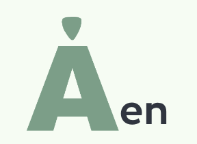
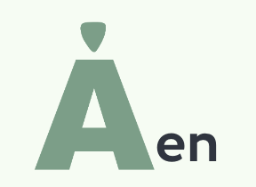

Åen i Aarhus blev brugt i middelalderen til at transportere handelsvare frem
og tilbage, fra havnen til oplandet. Da industrialiseringen kom,
blev åen også brugt til møller. Åen var en let måde at komme af med affald på
så blev den brugt som en skraldespand (ligesom nu hvor der ligger en masse cykler,
derfor man ikke må hoppe i åen og bade) I det 20. århundred blev en stor del af
åen dækket til og lavet til en vej, men i 1990’erne ubeskyttede de sig og
begyndte at genåbne åen. I 2005 blev åen færdig og er nu et af Aarhus’ central
områder, der finder du bland andet bar og caféer her.